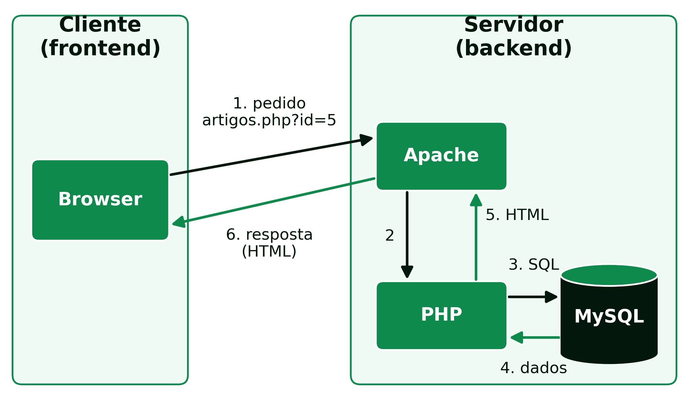

2 Arquiteturas Web e Infraestruturas
Arquiteturas Web e Infraestruturas
2.1 Arquiteturas Web
2.1.1 Arquitetura Cliente-Servidor
O modelo cliente-servidor é o paradigma de arquitetura amplamente usado no desenvolvimento de aplicações web, no qual os papéis dos computadores ou dispositivos envolvidos se dividem em duas categorias:
- Cliente: dispositivo ou programa que faz pedidos a um servidor para obter serviços, recursos ou informação. É tipicamente o browser, em computadores, telemóveis ou tablets, e é responsável por interagir com o utilizador e enviar pedidos ao servidor.
- Servidor: programa que responde aos pedidos dos clientes, processando-os, realizando operações e enviando as respostas de volta.
Um só computador pode desempenhar os dois papéis ao mesmo tempo, correndo tanto o cliente como o servidor, e um servidor pode responder a muitos clientes em simultâneo. O que nunca muda é a direção do pedido: é sempre o cliente que inicia a comunicação, o servidor limita-se a responder. Um servidor não envia dados a um cliente por iniciativa própria, sem que antes exista um pedido.
Este modelo tem uma consequência direta na forma como uma aplicação web se organiza: o código que corre no cliente, HTML, CSS e JavaScript, é enviado pelo servidor mas depois executado inteiramente no computador do utilizador, fora do controlo do programador de backend; já o código que corre no servidor, neste caso PHP, nunca é visível ao cliente, que recebe apenas o resultado do seu processamento. Esta separação é a base de toda a arquitetura estudada nesta UC: o frontend corre no cliente, o backend corre no servidor, e os dois lados comunicam através do protocolo HTTP.
Uma página estática, um ficheiro .html, é enviada ao cliente tal como está guardada no disco. Uma página dinâmica, um ficheiro .php, é executada pelo servidor a cada pedido, e o HTML que o cliente recebe é gerado nesse momento a partir dos dados disponíveis (Figura 2.1). No sítio de uma revista online, quando um leitor abre o endereço artigos.php?id=5:
- o browser envia o pedido ao servidor web, através do protocolo HTTP;
- o servidor web, o
Apache, reconhece um ficheiro PHP e entrega-o ao interpretador de PHP; - o PHP executa o código, que pede à base de dados o artigo número 5;
- a base de dados, o
MySQL, devolve o título, o autor e o texto desse artigo; - o PHP insere esses dados num modelo de página e produz HTML;
- o servidor web envia esse HTML ao browser, que o mostra ao leitor.

Se o artigo for corrigido na base de dados, o pedido seguinte já mostra a versão corrigida, sem que nenhum ficheiro HTML tenha sido editado.
2.1.2 Model-View-Controller (MVC)
O MVC é um padrão de arquitetura de software, proposto originalmente por Trygve Reenskaug em 1978, durante o seu trabalho no Xerox PARC sobre a linguagem Smalltalk (Reenskaug 2003). Hoje é um dos padrões mais usados no desenvolvimento de aplicações web, e separa a aplicação em três componentes:
- Model (Modelo): representa os dados e a lógica de negócio da aplicação. Lida com o acesso à base de dados, o processamento de dados e as regras de negócio, sendo responsável por armazenar e recuperar informação.
- View (Visualização): responsável por apresentar os dados ao utilizador, cuidando da interface e da forma como a informação é mostrada. Pode ser uma página web, uma interface gráfica ou qualquer outro método de apresentação.
- Controller (Controlador): atua como intermediário entre o modelo e a visualização. Recebe os pedidos do utilizador, processa-os e decide o que fazer com base neles, atualizando o modelo conforme necessário e escolhendo a visualização apropriada para mostrar os resultados.
Numa aplicação PHP típica, o HTML e a CSS constituem a View, o PHP implementa o Controller (e, frequentemente, também parte do Model), e a base de dados, como o MySQL, é onde o Model persiste os dados.
A principal vantagem do MVC é a separação de responsabilidades: quem altera a aparência de uma página não precisa de mexer na lógica de negócio, e quem altera a forma como os dados são processados não precisa de mexer no HTML. Isto facilita a manutenção do código à medida que a aplicação cresce, permite que partes diferentes da aplicação sejam testadas de forma independente, e possibilita que várias pessoas trabalhem em simultâneo em componentes diferentes da mesma aplicação sem interferirem umas com as outras.
2.1.3 Arquitetura em Três Camadas
Intimamente relacionada com o MVC está a arquitetura em três camadas (3-tier), que separa uma aplicação em camada de apresentação (o que o utilizador vê e com que interage), camada de lógica de negócio (o processamento e as regras da aplicação) e camada de dados (o armazenamento persistente). Numa aplicação PHP, isto traduz-se, tipicamente, em HTML/CSS na camada de apresentação, PHP na camada de lógica, e MySQL na camada de dados.
A diferença entre o MVC e a arquitetura em três camadas é sobretudo de nível: o MVC é um padrão de organização do código dentro de uma aplicação, enquanto a arquitetura em três camadas descreve, de forma mais geral, como essas responsabilidades se distribuem, podendo inclusivamente correr em máquinas físicas diferentes, por exemplo um servidor de aplicação separado do servidor de base de dados. Na prática, para uma aplicação PHP como as desenvolvidas nesta UC, as duas arquiteturas descrevem, em grande medida, a mesma separação de responsabilidades vista de ângulos diferentes.
2.1.4 Renderização no Servidor e no Cliente
No percurso descrito acima, é o servidor que monta a página completa: a página é renderizada no servidor (server-side rendering), o modelo do PHP e o seguido neste livro. Nas aplicações de página única (Single Page Applications, SPA), feitas com React, Angular ou Vue, acontece o inverso: o servidor envia uma página quase vazia e o código JavaScript, a correr no browser, pede os dados em formato JSON e constrói a página no próprio cliente (client-side rendering). A navegação fica mais fluida, mas o primeiro carregamento é mais pesado. Muitas aplicações combinam os dois modelos.
2.2 Infraestruturas
2.2.1 Servidores
Um servidor web é o programa responsável por escutar pedidos HTTP numa porta de rede e devolver respostas, tipicamente páginas web ou dados. É uma peça de software que corre continuamente numa máquina, à espera de novas ligações, capaz de lidar com muitos pedidos em simultâneo, vindos de clientes diferentes. Os servidores web mais usados incluem o Apache e o NGinX, ambos capazes de servir páginas PHP, seja através de um módulo embutido ou de um processo separado (como o PHP-FPM) que o servidor web invoca para executar o código PHP.
Para além dos servidores web, existem outros tipos de servidores especializados. No mundo Java, por exemplo, há servidores de aplicações como o GlassFish, mantido atualmente pela Eclipse Foundation no âmbito do Jakarta EE, e o WildFly (anteriormente conhecido como JBoss Application Server; hoje o nome do produto comercial suportado pela Red Hat é JBoss EAP). Do lado dos dados, o MySQL Server é o exemplo mais comum no contexto desta UC, correndo como um processo à parte do servidor web, e comunicando com o PHP através de uma ligação de rede local.
Em produção, estes servidores correm numa máquina sempre ligada à Internet, normalmente de uma de três formas:
- alojamento partilhado: muitos sítios no mesmo servidor, já configurado com
Apache,PHPeMySQL; é barato, mas dá pouco controlo sobre a configuração; - servidor virtual privado (Virtual Private Server, VPS): uma máquina virtual alugada, que o programador configura à sua medida;
- nuvem, como a
Amazon Web Services, oMicrosoft Azureou aGoogle Cloud: infraestrutura ou plataformas prontas a usar, pagas em função dos recursos consumidos.
2.2.2 Serviços Web (API)
Uma API (Application Programming Interface) de um serviço web permite que diferentes sistemas comuniquem entre si através da rede, tipicamente sobre HTTP. Do ponto de vista da arquitetura MVC, uma API é, em muitos casos, um Controller que devolve dados estruturados, em vez de uma página HTML pronta a mostrar ao utilizador, para serem consumidos por outra aplicação. Os dois estilos mais conhecidos são:
- REST (Representational State Transfer): usa os métodos HTTP (GET, POST, PUT, DELETE) sobre recursos identificados por URLs, e troca dados normalmente em JSON. É hoje o estilo dominante, representando cerca de 75% da adoção entre programadores (DreamFactory 2025).
- SOAP (Simple Object Access Protocol): um protocolo mais rígido e formal, baseado em XML, com um contrato de serviço explícito. Está hoje limitado sobretudo a sistemas legados em indústrias reguladas, como a banca, a saúde ou sistemas empresariais (ERP), onde continua a processar volumes de transações elevados apesar de já não ser a escolha para novos serviços (DreamFactory 2025).
2.2.3 Virtualização
Para desenvolver e testar aplicações web de forma isolada do sistema operativo do computador local, e sem o risco de o resultado do trabalho depender de particularidades desse computador, usam-se ambientes virtualizados. Há duas abordagens principais:
Máquinas virtuais: cada máquina virtual inclui o seu próprio sistema operativo completo, para além da aplicação e das suas dependências. A vantagem é isolarem-se completamente umas das outras, e as suas configurações poderem ser partilhadas e reproduzidas com confiança, garantindo que todos os alunos de uma turma trabalham exatamente sobre a mesma configuração de servidor; a desvantagem é a duplicação de recursos, já que cada máquina virtual carrega o seu próprio sistema operativo, e tempos de arranque mais longos.
Contentores: em vez de replicarem todo o sistema operativo, os contentores partilham o núcleo do sistema operativo do anfitrião, encapsulando apenas a aplicação e as suas dependências. O Docker é a ferramenta de referência para este modelo. As vantagens são o menor impacto no sistema, o arranque mais rápido e a facilidade de partilha, compilação e distribuição; a desvantagem é um isolamento menos completo do que uma máquina virtual inteira, já que todos os contentores de uma máquina partilham o mesmo núcleo do sistema operativo.
A tabela seguinte resume as diferenças entre as duas abordagens (Tabela 2.1).
| Máquina virtual | Contentor | |
|---|---|---|
| Sistema operativo | completo, próprio de cada máquina | partilha o núcleo do anfitrião |
| Tamanho típico | vários gigabytes | de megabytes a centenas de megabytes |
| Arranque | de dezenas de segundos a minutos | segundos |
| Isolamento | total | parcial (núcleo partilhado) |
| Ferramenta de referência | VirtualBox |
Docker |
No Docker, três conceitos são essenciais:
- imagem: o modelo com tudo o que a aplicação precisa para correr;
- contentor: uma imagem em execução; da mesma imagem podem arrancar-se vários contentores iguais, como da mesma receita se fazem vários bolos;
- Docker Compose: um ficheiro que descreve vários contentores que trabalham em conjunto, por exemplo o servidor web e a base de dados, arrancados com um só comando.
Esta distinção não é apenas académica: as mesmas duas abordagens usadas para desenvolver localmente, numa máquina virtual ou num contentor, são também as mais comuns para pôr uma aplicação web em produção num servidor real, o que faz da escolha do ambiente de desenvolvimento uma decisão com impacto direto na forma como a aplicação será depois publicada.
2.2.4 O Ambiente de Trabalho desta UC
Nesta UC, o backend é desenvolvido dentro de contentor docker com Ubuntu, contendo o servidor Apache (servidor web), MySQL (a base de dados) e PHP 8 (linguagem de programação). O editor de texto usado pode ser qualquer um, como o Visual Studio Code.
Este ambiente isola a área de desenvolvimento do sistema operativo do computador de cada aluno, seja macOS, Ubuntu ou Windows, garantindo que todos trabalham sobre a mesma configuração de servidor, base de dados e linguagem, independentemente do computador usado em casa.